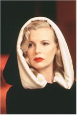

Contents | Features | Reviews | News | Archives | Store

Contents | Features | Reviews | News | Archives | Store
 |
70th Academy Awards (1998) |
A Night to Remeber
Hollywood's Good Will As It Gets
70th Annual Academy Awards
Send Titantic to Record Book
It was an evening of goofy sincerity mixed with off-color humor (for television, anyway) as an obviously happy Hollywood community congratulated and rewarded itself for a very good year and 14 weeks of record-breaking business last night (23 March) at the Shrine Auditorium in Los Angeles. Current all-time box office champion Titanic won 11 of the 14 Oscars for which it was nominated, tying the 1959 movie Ben-Hur for the most Academy Awards ever given to a single film (the 14 nominations tied 1950's All About Eve). This achievement is significant on a number of levels, as each film is a fact-based epic with strong elements of tragedy that connected with audiences of the day. Significantly, Ben-Hur was only nominated for 12 Oscars to Titanic's 14, and two of the 11 won by the 1959 epic were for acting (Karl Tunberg lost the screenplay Oscar to Room at the Top's Neil Paterson), whereas neither Kate Winslet nor Gloria Stuart won for Titanic (the movie also lost the make-up award to the film that became a smash at least in part when it's release was delayed from summer to the Christmas season, Men in Black).
Except for that splendid song-and-dance performed by Stanley Donen when he received his honorary Oscar for lifetime achievement(a deserved honor for the director of Singin' in the Rain, Seven Brides for Seven Brothers, Bedazzled and many more Hollywood musicals and comedy/dramas), the evening was notably light on comeback stories and tributes to Hollywood's current crop of hard-luck veterans. Long-anticipated Oscars to Julie Christie (for Afterglow), Peter Fonda (for Ulee's Gold), Robert Duvall (for The Apostle), Burt Reynolds (for Boogie Nights), Robert Forster (for Jackie Brown) and Gloria Stuart (for Titanic) failed to materialize. Instead, Academy of Motion Picture Arts and Sciences voters opted to fete their own, giving the Best Actress Oscar to the only American nominated (Helen Hunt, As Good As It Gets – and the same thing happened in 1971 when Jane Fonda won for Klute), the Best Actor Oscar to an eccentric, immensely popular actor who's now won an Academy Award in each of the last three decades (Jack Nicholson, As Good As It Gets, following One Flew Over the Cuckoo's Nest and Terms of Endearment), the Best Supporting Actor Oscar to a popular comedian in a fine dramatic role (Robin Williams, Good Will Hunting) and Best Supporting Actress to a former laughingstock turned formidable screen presence (Kim Basinger, L.A. Confidential).
This theme continued in the two screenplay sections, as Ben Affleck and Matt Damon's Good Will Hunting bested such fine scripts as Boogie Nights (in fact, Paul Thomas Anderson's impressive movie failed to win any of it's three nominations) for the Best Original Screenplay Oscar and the skillful adaptation of a supposedly unfilmable novel earned L.A. Confidential the Best Adapted Screenplay award for director Curtis Hanson and Brian Helgeland (ironically enough, the latter also wrote two of the year's worst movies, Conspiracy Theory and The Postman). Another worthy but modest movie shut out last night was Atom Egoyan's egregiously overlooked The Sweet Hereafter, nominated in this category and for Egoyan's sublime direction.
 And
speaking of direction, wasn't everything we love and hate about Hollywood embodied in
James Cameron's two winning speeches? During the first, for Best Director, he reprised
Leonardo DiCaprio's incongruously contemporary line from Titanic, "I'm the
King of the World! Whooeeee!" and provided the show it's most embarrassing moment
(yes, worse than Madonna's dress and the glare ex-paramour Minnie Driver was caught giving
Matt Damon as he and Affleck thanked everybody from Sunset Boulevard to Fenway Park when
they won their screenplay Oscar). But you've gotta love the chutzpah and his presence of
mind when Cameron, at about the 12:30 am mark, asked for a moment of silence to pay
tribute to the lives lost when the Titanic (boat, not movie) sank on April 14, 1912. A
bold, classy move. But that, apparently, is the contradiction that is James Cameron, a
notoriously volcanic man now without a doubt the hottest commodity in Hollywood.
And
speaking of direction, wasn't everything we love and hate about Hollywood embodied in
James Cameron's two winning speeches? During the first, for Best Director, he reprised
Leonardo DiCaprio's incongruously contemporary line from Titanic, "I'm the
King of the World! Whooeeee!" and provided the show it's most embarrassing moment
(yes, worse than Madonna's dress and the glare ex-paramour Minnie Driver was caught giving
Matt Damon as he and Affleck thanked everybody from Sunset Boulevard to Fenway Park when
they won their screenplay Oscar). But you've gotta love the chutzpah and his presence of
mind when Cameron, at about the 12:30 am mark, asked for a moment of silence to pay
tribute to the lives lost when the Titanic (boat, not movie) sank on April 14, 1912. A
bold, classy move. But that, apparently, is the contradiction that is James Cameron, a
notoriously volcanic man now without a doubt the hottest commodity in Hollywood.
It was a very good night for stargazing, as movie buffs who managed to stay up till the wee hours of Tuesday morning were rewarded with the awesome spectacle of every living actor and actress possessing an Oscar all on the same stage. Seeing Nicholson wave his metal again was one thing, but seeing true Hollywood legends like Teresa Wright, Shirley Temple, Luise Rainer, Sidney Poitier, Harold Russell, and Claude Jarman Jr. in one place was a thrilling moment, and perfectly in keeping with the cheery and unforced mix of old and new that typified the entire production.
The strong but probably coincidental undercurrent of sophomoric humor throughout the telecast was as odd as it was jarring; in any other year it would have been welcome comic relief but last night actually detracted from the lotta love in the room. Dustin Hoffman introduced a cool clip show encapsulating the previous 69 Best Picture winners by speculating on that number's universal significance, while Crystal revealed that his Aunt Sheila was the only thing that retained more water than Titanic (the boat or the movie? Not sure). Even the technical guys got into the act, as winning cinematographer Russell Carpenter (Titanic, what else?) said "we're running late, so this is becoming a 'Depends' moment for me," thus giving perhaps the most unique product plug in Academy Awards history.
Still, there were legitimate zingers galore, as well as some shining moments: host
Billy Crystal's early routines and scandal jokes ("to think that a year ago the White
House was complaining about too much sex in Hollywood");  Hunt's
pointed reference to As Good As It Gets director James L. Brooks' exclusion from
the Best Director category (especially ironic since the Best Actor and Best Actress winner
were both directed by the only Best Picture nominee not to see it's director nominated);
the ebullient on-stage histrionics of former film critic, Foreign Film Oscar-winning
director and true Character Mike van Diem (not to mention Nicholson, the
Affleck/Damon team, Cameron and – come to think of it – almost everybody else);
Original Comedy and Music Score winner Anne Dudley's assertion that her agent was
"scraping the barrel a bit here" when he called her to compose for The Full Monty (that surprise hit's only
Oscar win); Martin Scorsese's heartfelt introduction of Donen; Basinger's assertion that
"if anyone has a dream out there, I'm living proof that it can come true"; and
even the Oscar fashions, which can usually be counted on to be pretty hideous but were for
the most part this year tasteful and even classy (note to Robin "Armani Amish"
Williams and other a few other guys: a tux is a tux is a tux – don't try to improve
an already flattering concept).
Hunt's
pointed reference to As Good As It Gets director James L. Brooks' exclusion from
the Best Director category (especially ironic since the Best Actor and Best Actress winner
were both directed by the only Best Picture nominee not to see it's director nominated);
the ebullient on-stage histrionics of former film critic, Foreign Film Oscar-winning
director and true Character Mike van Diem (not to mention Nicholson, the
Affleck/Damon team, Cameron and – come to think of it – almost everybody else);
Original Comedy and Music Score winner Anne Dudley's assertion that her agent was
"scraping the barrel a bit here" when he called her to compose for The Full Monty (that surprise hit's only
Oscar win); Martin Scorsese's heartfelt introduction of Donen; Basinger's assertion that
"if anyone has a dream out there, I'm living proof that it can come true"; and
even the Oscar fashions, which can usually be counted on to be pretty hideous but were for
the most part this year tasteful and even classy (note to Robin "Armani Amish"
Williams and other a few other guys: a tux is a tux is a tux – don't try to improve
an already flattering concept).
"You really made this a night to remember in every way. Now let's party 'til dawn!" said Cameron after Titanic's sweep was complete, and that sentiment just about sums up the giddiness of the evening. Basking in such a mood of unified optimism, Oscar producer Gilbert Cates and director Louis J. Horvitz were smart enough to just let the evening flow (a particularly nifty new flourish was filling the time between the opening of the envelope and the appearance on stage of the winner with a voice-over delineating that winner's previous Oscar history).
And flow it did: for the record, if the ceremony did indeed run three hours and forty-five minutes (do they issue an official running time?), then it ties the longest ceremony on record, which occurred April 9, 1984 – the last time Jack Nicholson won an Oscar for acting in a James Brooks picture (Terms of Endearment). The ceremony was also a full half hour longer than the winning picture itself, which is proof positive that when Hollywood's feeling good about itself, time stands still – no matter how silly or raucous things get.
Contents | Features
| Reviews | News | Archives | Store
Copyright © 1999 by Nitrate Productions, Inc. All Rights
Reserved.